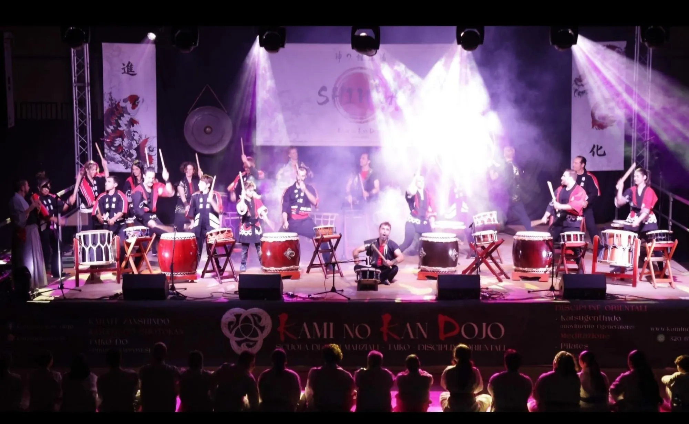
Dicembre 2025 · Ultimo eventoSHINKA — I 20 anni della nostra Scuola
Spettacolo di Tamburi Giapponesi Taiko con gli artisti del Kyo Shin Do di Genova e gli allievi della scuola.
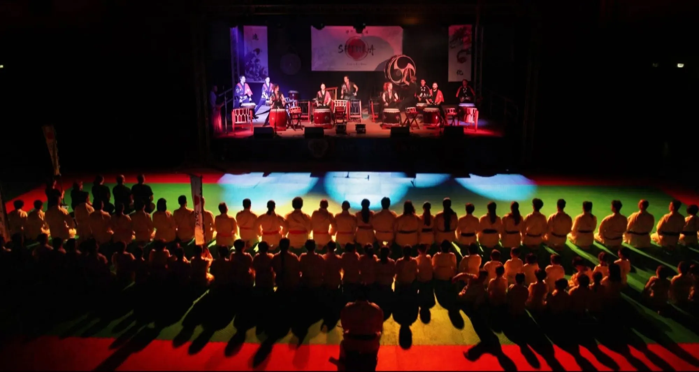

Dicembre 2025 · Ultimo eventoSpettacolo di Tamburi Giapponesi Taiko con gli artisti del Kyo Shin Do di Genova e gli allievi della scuola.
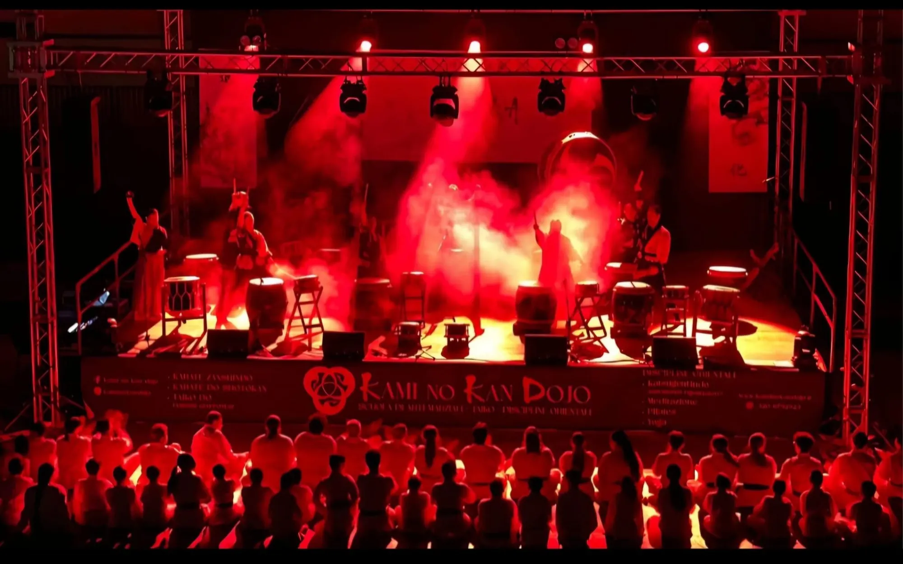
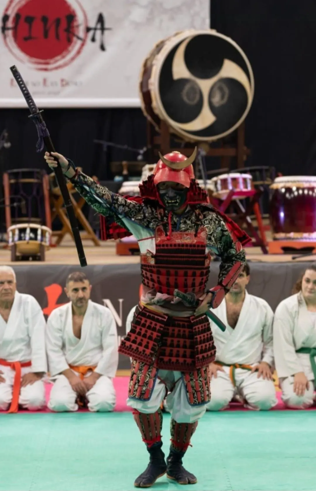
Cronologia
Maggio 2018 · Teatro Diana, Nocera Inferiore
Concerto di Taiko, con la partecipazione degli AZUMA.
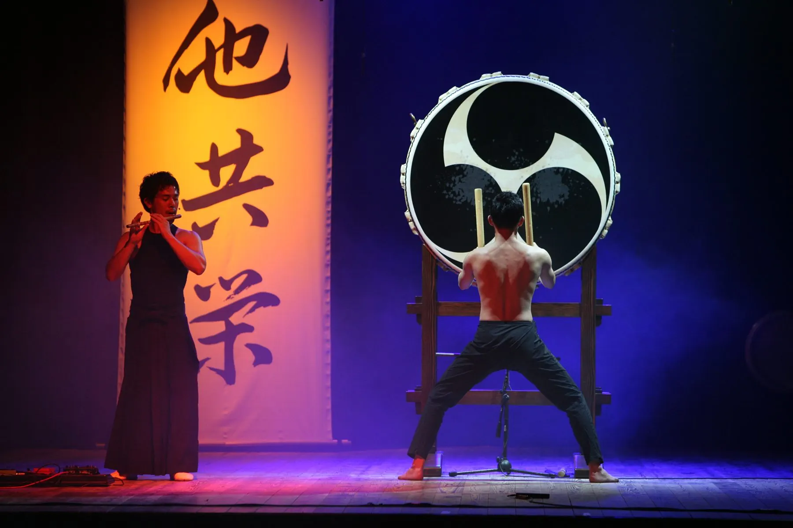
Giugno 2018 · Düsseldorf
Concerto internazionale, con il Kyoshindo.
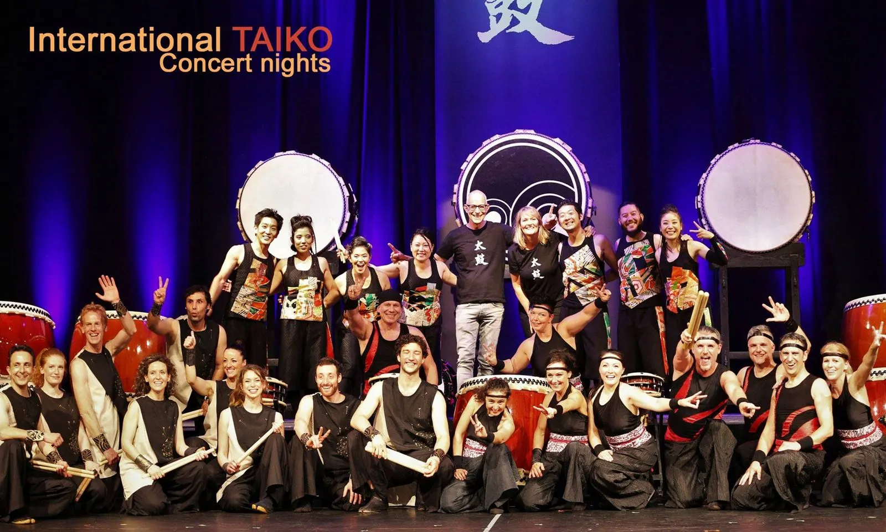
Aprile 2017 · Complesso di Santa Sofia, Salerno
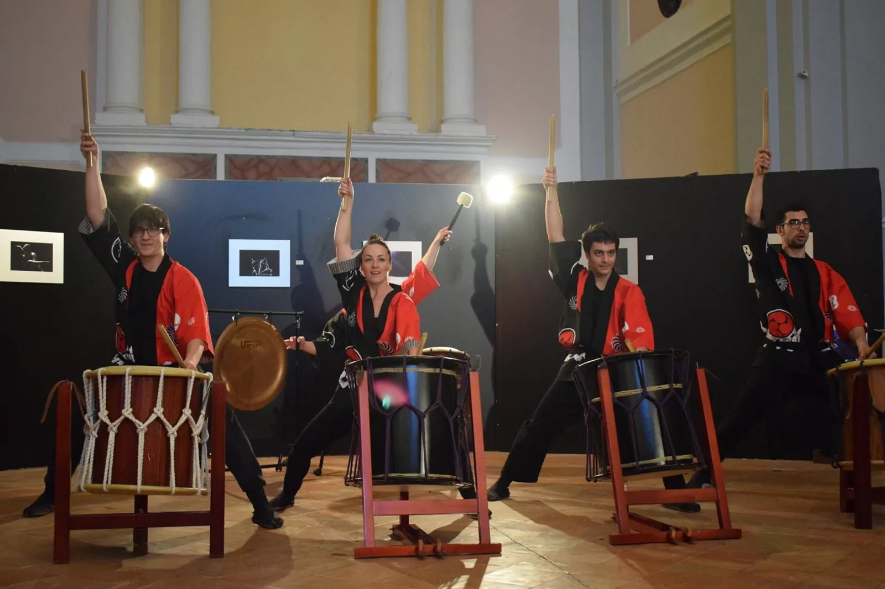
Novembre 2015 · Teatro Diana, Nocera Inferiore
Con il Kyoshindo.
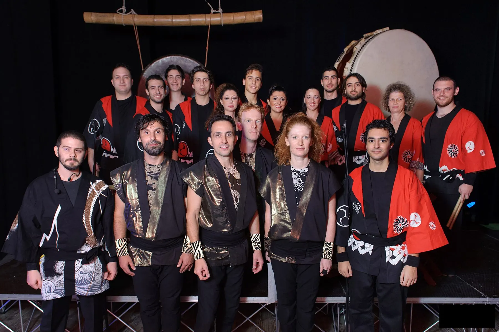
Febbraio 2015 · Teatro della Tosse, Genova
Giugno 2012 · Auditorium S. Alfonso, Pagani
Dicembre 2012 · Teatro Diana, Nocera Inferiore
Giugno 2011 · Teatro Diana, Nocera Inferiore
Matsuri
Il Kami No Kan partecipa al Matsuri presso l'Hombu Dojo di Genova.
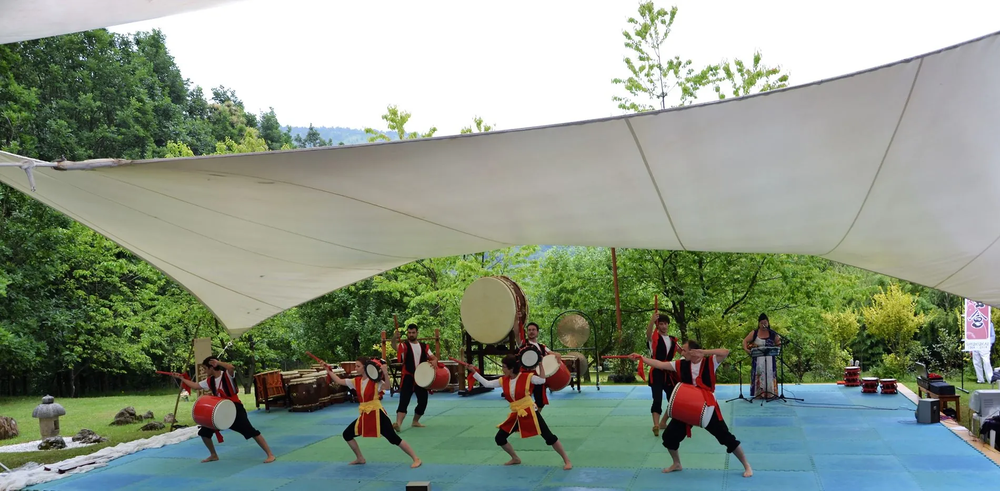
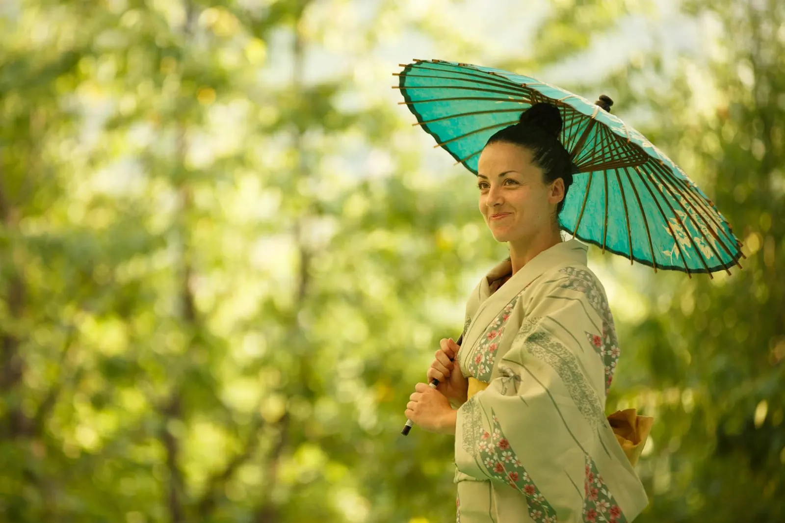
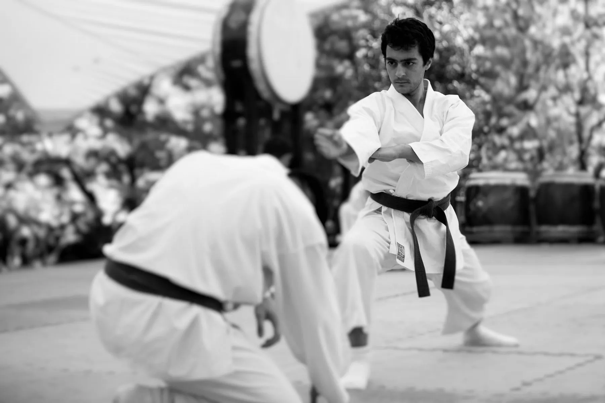
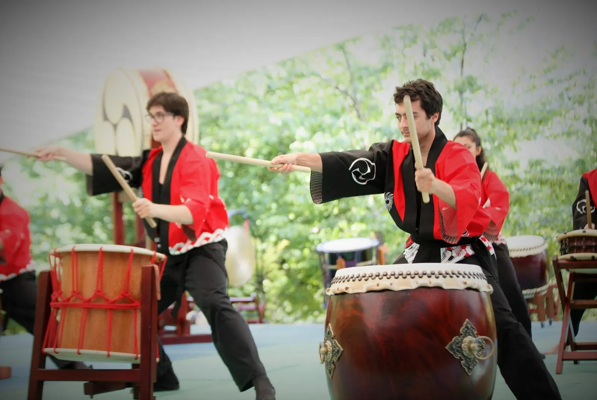
Seminari
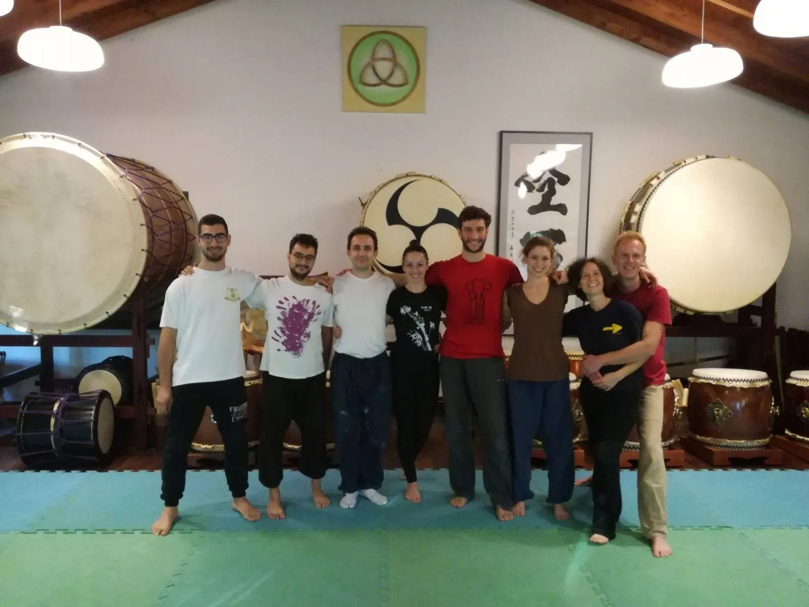
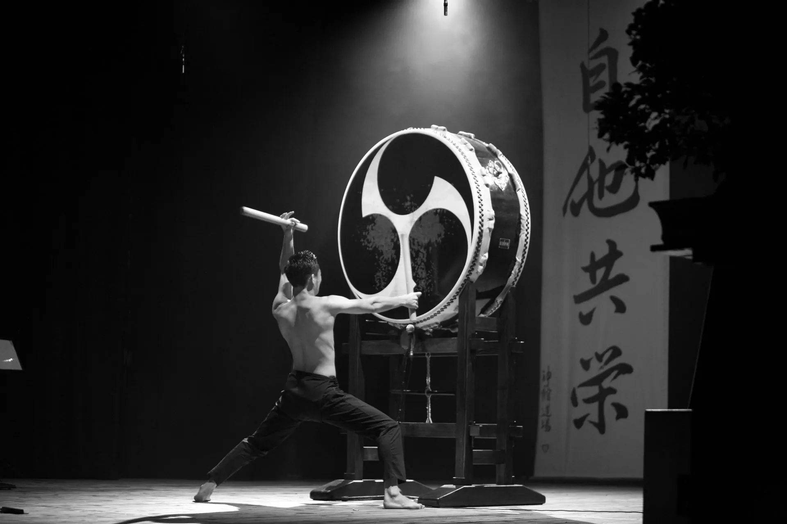
Prossimi appuntamenti
Per informazioni su spettacoli e seminari in programma, scrivici o chiamaci.